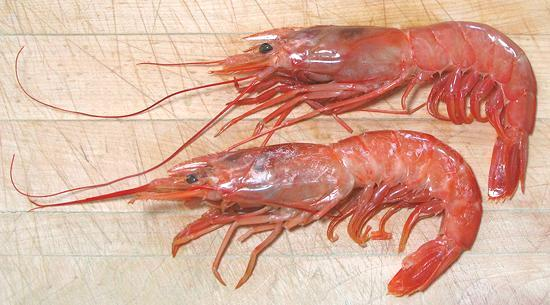
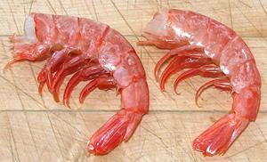

Argentine Red Shrimp

[Langostino Rojo Argentino, Gambón Argentino, Langostino Austral,
Gambón Austral; Pleoticus muelleri]
These shrimp are native to the Atlantic coast of South America, from
Rio de Janeiro, Brazil, to Tierra del Fuego and the Falkland Islands.
They can grow to over 8 inches long (head-on, tip of rostrum to tip of
tail) and the head-on photo specimens were up to 8 inches and weighed
up to 2-1/8 ounces each. The head-off photo specimens were
typically 4-1/2 inches long and weighed 0.66 ounces each. These shrimp
are red because they lack the coating of gray-green protein many other
shrimp have.
More on Shrimp & Prawns.

The flesh of these shrimp is tender, even after cooking. While most
shrimp are firm when cooked, the flesh of these shrimp "shatters"
into longitudinal strips. This texture can be seen in the raw state.
In my opinion, the flavor of these shrimp is less "shrimpy" then the
flavor of some other shrimp.
Buying:
These shrimp occasionally appear in Yuppie
oriented markets such as Trader Joe's or Whole Foods Market. They
also occasionally appear in the Asian fish markets here in Los Angeles.
It's not a shrimp you can just go out and buy, it's a shrimp you
may want to buy when you see it. The photo head-off specimens were
bought from a large Asian market in Los Angeles (Alhambra) for 2016
US $6.08 / pound. Two months later, the head-on specimens were
bought at the same market for $6.99 / pound. Usually head-on is
cheaper than head-off, so perhaps the yuppies are driving the price
up.
Shelling:
These are a little more difficult to shell
than regular White Shrimp due to thicker shells, but not by a lot.
De-veining:
The gut is large and tender, but can,
with care, be removed without breaking the skin at the top. The most
successful method is to break the gut at the tail, then get hold of
it at the front end and pull it out forward.
De-veining the regular way is a bit harder. With many shrimp you can
just peel off the "V" shaped strip of flesh above the gut, but not so
easy here (until after they are cooked). The skin is tough, the flesh
fragile, and the "V" doesn't break off naturally, so it tends to tear
up. If the gut breaks trying to pull it out, the best strategy is to
insert your skewer or a thin pointed knife into the front and break
through the skin at the top far enough back that you can get hold of
the gut again and pull it out forward.
Yield:
For head-on shrimp 15.6 ounces yielded 6-1/8
ounces of shell-off tail meat (39%).
Stock:
Heads and shells from head-on shrimp, simmered
slowly for about 40 minutes, make a rather good shrimp stock. Heads and
shells from 1 pound of shrimp will make up to 4 cups of stock. It is
rather murky, but, placed in a jar in the refrigerator, the solids will
soon settle to the bottom, leaving an almost clear stock.
sf_shmparz* 160822 - www.clovegarden.com
©Andrew Grygus - agryg@aaxnet.com - Linking to and
non-commercial use of this page is permitted.